Planifiez, réalisez et suivez vos audits métier et QHSE dans Odoo 18 : checklists, anomalies avec preuves photo, plans d’actions, tableau de bord de conformité et rapport PDF.
Gratuit · Licence LGPL-3
Odoo 18 · Community & Enterprise · Dépendances : base, mail, hr, web
Un audit, de A à Z, en 7 étapes
Toutes les captures proviennent du module installé sur Odoo 18, avec un exemple réaliste : la société fictive SOGEPAC SARL fait auditer son usine, son entrepôt et son siège.
1 · Référentiels2 · Fiche d’audit3 · Checklist4 · Anomalies5 · Actions6 · Rapport PDF7 · Tableau de bord
NOUVEAU
Un tableau de bord doux et complet
Dès que vous ouvrez ADK-AUDIT, une vue d’ensemble défilable affiche tout le travail réalisé : conformité, audits, anomalies, actions, évolution mensuelle et activité de chaque auditeur. Tout se lit d’un coup d’œil, et chaque carte est cliquable pour ouvrir le détail.
Taux de conformité moyenAudits, anomalies, actionsÉvolution sur 6 moisConformité par serviceAnomalies par gravitéPlan d’actionsAudits en coursPoints d’attentionTravail par auditeurFiltres Métier / QHSEPériode 30 j · 3 mois · 12 mois
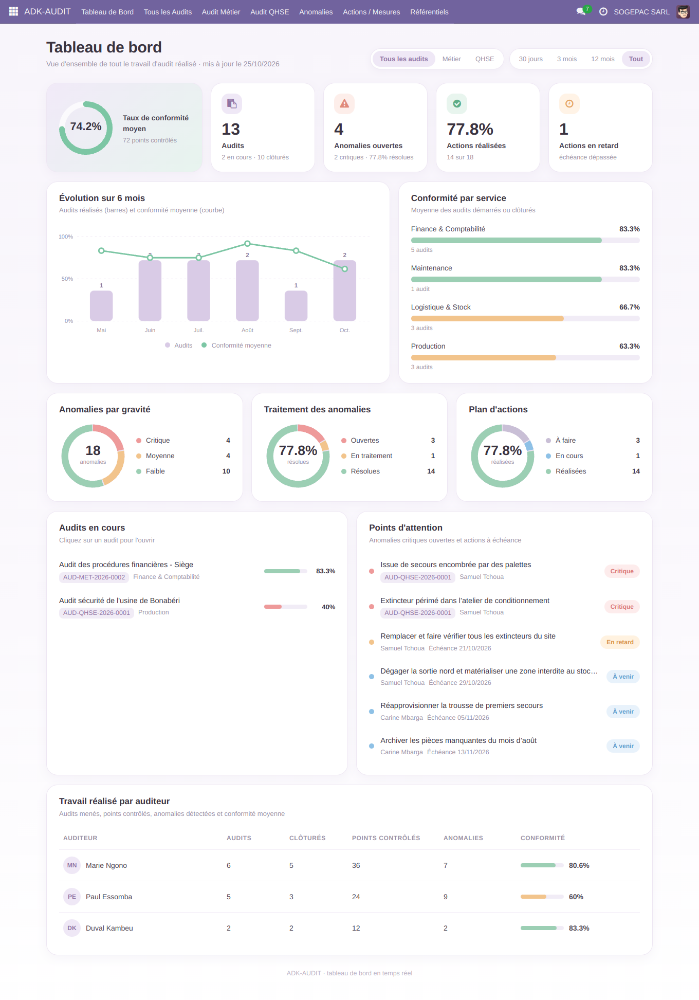
Vue d’ensemble : toute l’activité d’audit sur une seule page, à faire défiler
Filtrez en un clic
Basculez entre tous les audits, Métier ou QHSE, puis choisissez la période : 30 jours, 3 mois, 12 mois ou tout l’historique.
Cliquez pour approfondir
Chaque indicateur, graphique ou ligne ouvre la liste ou la fiche correspondante : audit, anomalie, action en retard.
Chacun voit son périmètre
Les droits d’accès s’appliquent : un auditeur Métier ne voit que le Métier, un responsable QHSE que le QHSE.
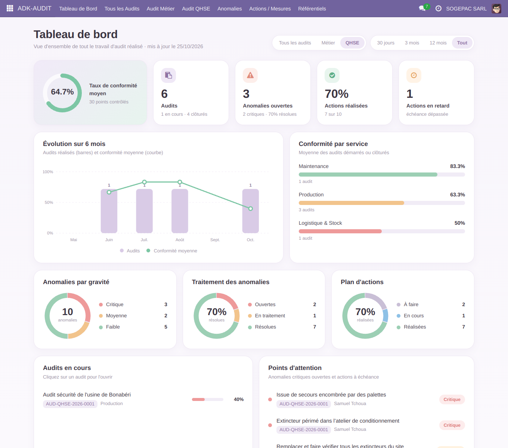
Même tableau de bord filtré sur les audits QHSE
ÉTAPE 1
Préparez vos référentiels
Dans le menu Référentiels, déclarez une seule fois les services, les sites (avec responsable et personnel affecté) et le catalogue des points à auditer. Ces données alimentent ensuite tous vos audits.
Catalogue séparé pour l’audit métier (finance, gestion) et l’audit QHSE.
Un point peut être rattaché à un service précis, ou valable pour tous.
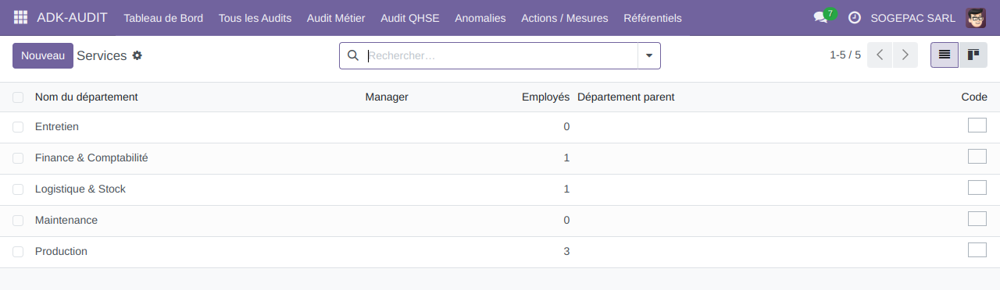
Liste des services audités
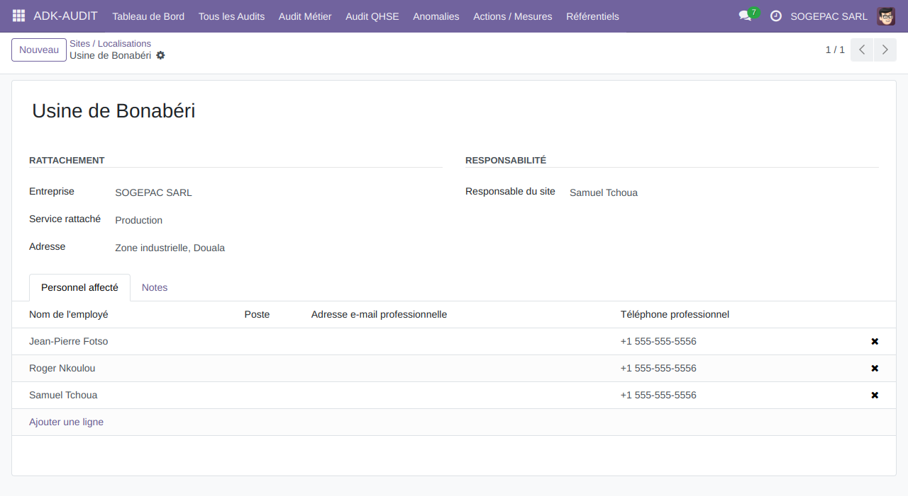
Fiche d’un site : responsable et personnel affecté
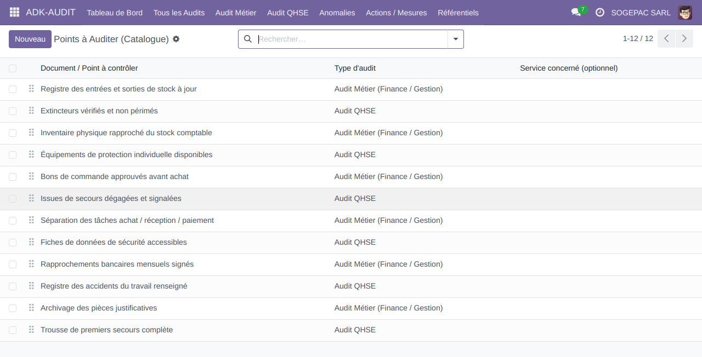
Catalogue des points à auditer, métier et QHSE
ÉTAPE 2
Créez la fiche d’audit
Depuis Audit Métier, Audit QHSE ou Tous les Audits, cliquez sur Nouveau puis renseignez le titre, l’entreprise auditée, le service, le site, les auditeurs et les dates. La référence est attribuée automatiquement (AUD-MET-2026-0001, AUD-QHSE-2026-0001).
Le statut suit le cycle Brouillon → En cours → Clôturé.
Plusieurs auditeurs peuvent être affectés à la même mission.
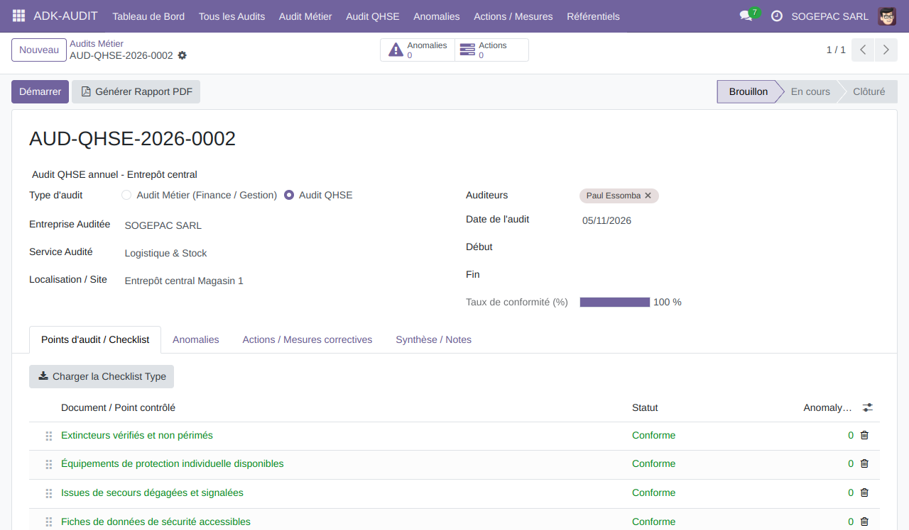
Fiche d’audit en brouillon
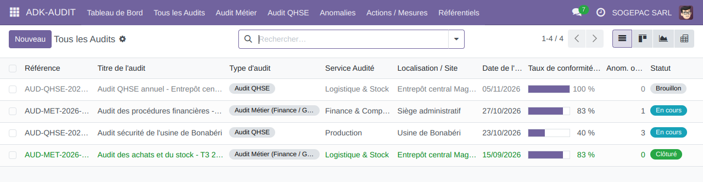
Tous les audits, avec leur taux de conformité
ÉTAPE 3
Chargez la checklist et contrôlez chaque point
Le bouton Charger la checklist type importe en un clic les points du catalogue adaptés au type d’audit et au service. L’auditeur marque chaque point Conforme, Non-conforme ou Non applicable. Le taux de conformité se calcule tout seul, en excluant les points non applicables.
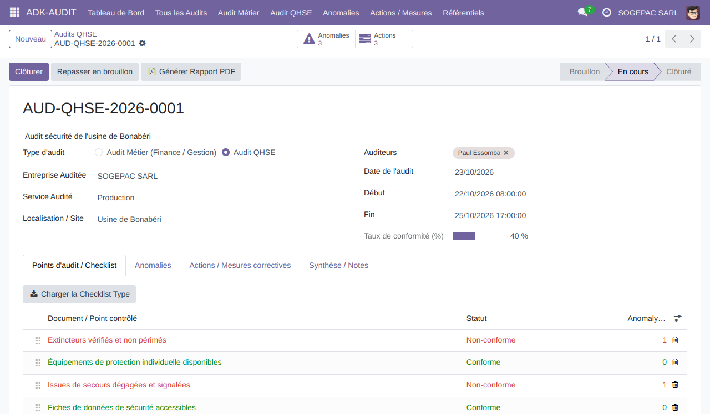
Checklist d’un audit QHSE en cours
ÉTAPE 4
Enregistrez les anomalies avec preuves photo
Chaque non-conformité donne lieu à une anomalie : résumé, description, gravité (faible, moyenne, critique), personne concernée, localisation et date de détection. Ajoutez plusieurs photos de preuve directement sur la fiche.
Traitement : Ouverte → En cours de traitement → Résolue.
Les photos de preuve sont reprises automatiquement dans le rapport PDF.
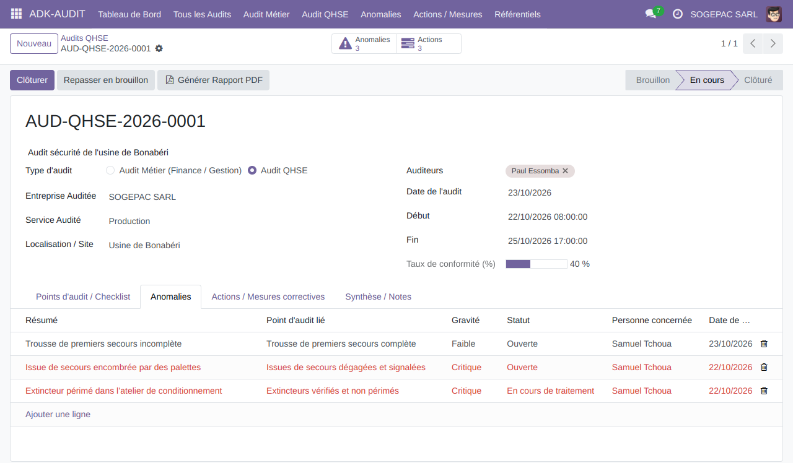
Onglet Anomalies de l’audit
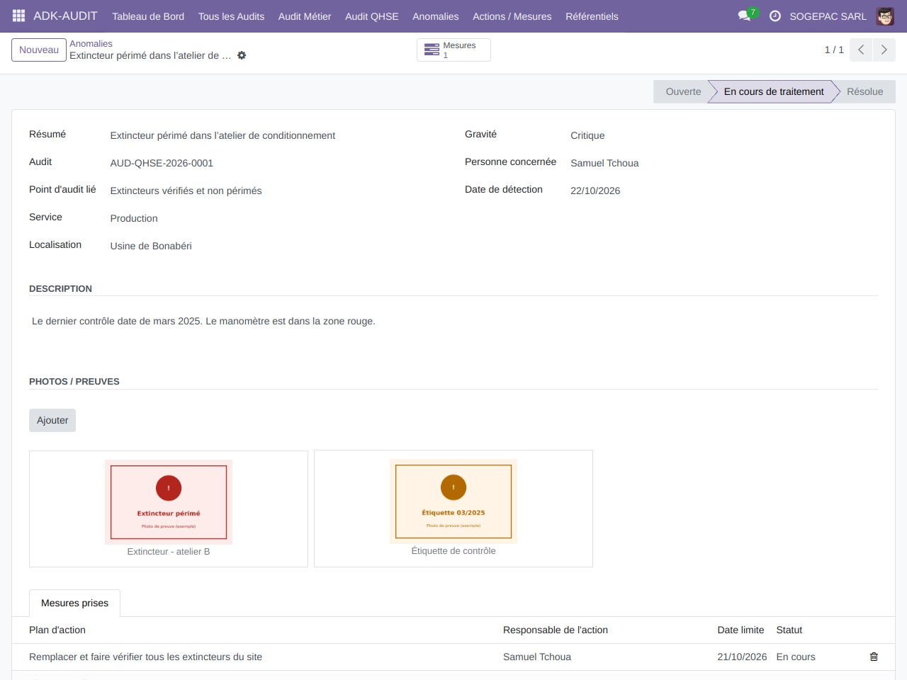
Fiche anomalie avec photos de preuve (images d’exemple)
ÉTAPE 5
Définissez le plan d’actions correctives
Pour chaque anomalie, créez une ou plusieurs actions avec un responsable, une date limite et un statut (À faire, En cours, Réalisée). Une action dont l’échéance est dépassée passe automatiquement en retard et s’affiche en rouge.
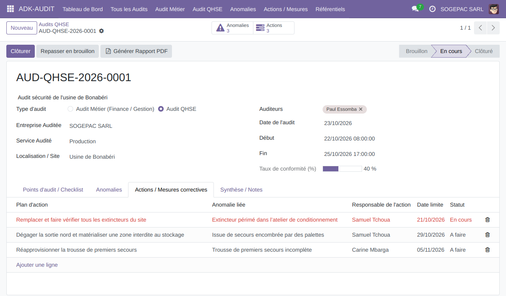
Onglet Actions / Mesures correctives
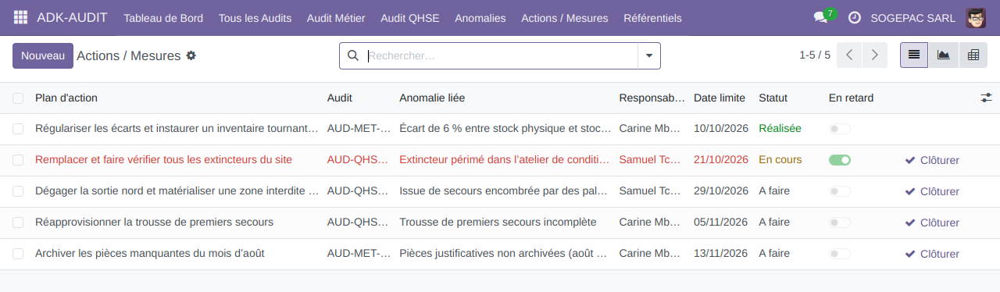
Suivi de toutes les actions et des retards
ÉTAPE 6
Clôturez l’audit et imprimez le rapport PDF
Le bouton Clôturer verrouille la mission. Le bouton Générer Rapport PDF produit un rapport professionnel : en-tête, synthèse chiffrée, points non conformes, anomalies avec leurs photos et plan d’actions.
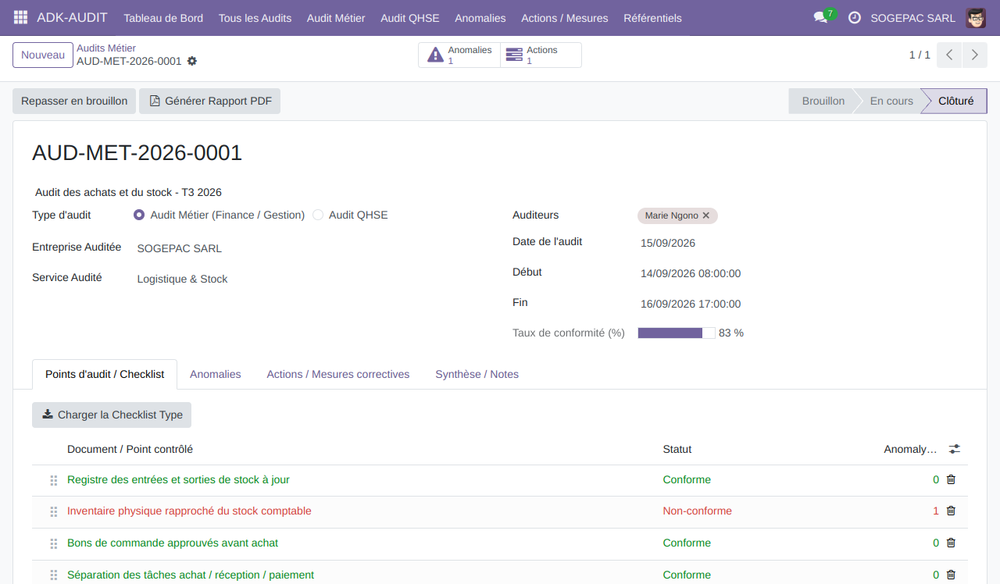
Audit métier clôturé
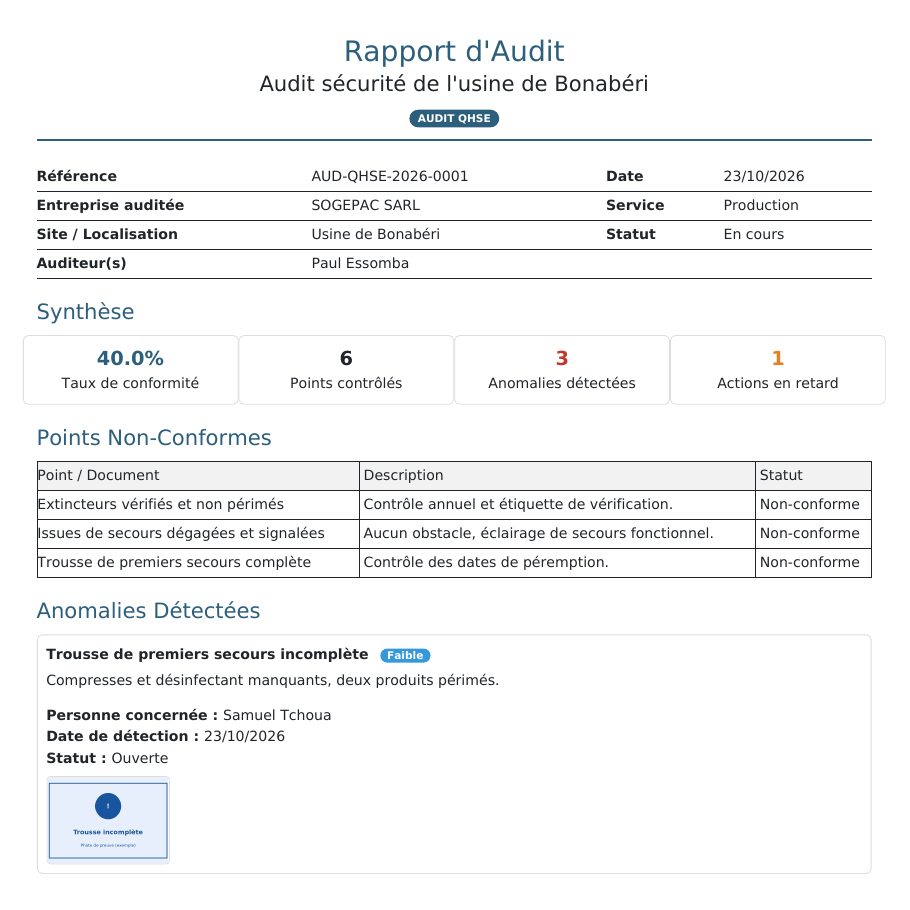
Rapport d’audit au format PDF
ÉTAPE 7
Pilotez avec le tableau de bord
Le menu Tableau de Bord s’ouvre sur la vue d’ensemble présentée plus haut, et propose aussi des analyses détaillées : cockpit des audits en cours, taux de conformité par service, anomalies par gravité, anomalies ouvertes ou résolues et suivi des délais des actions. Chaque vue est filtrable et exportable.
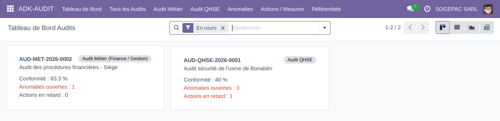
Cockpit des audits en cours
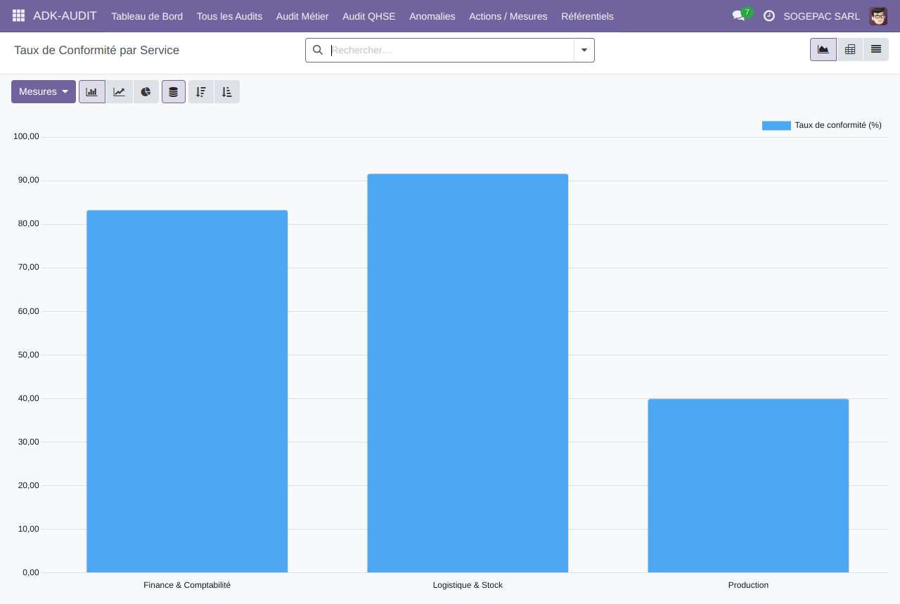
Taux de conformité moyen par service
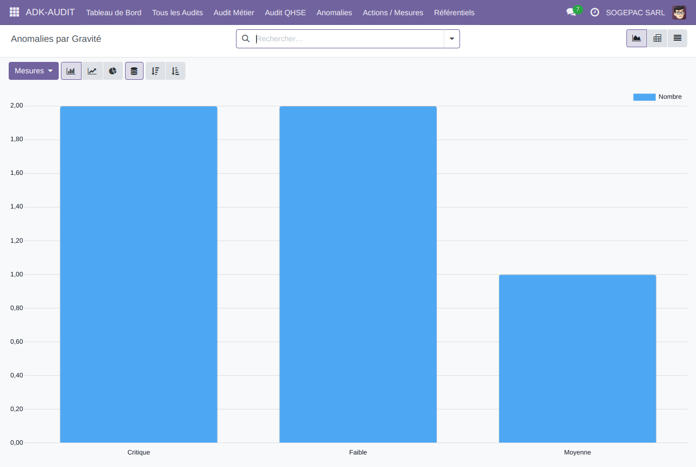
Anomalies par gravité
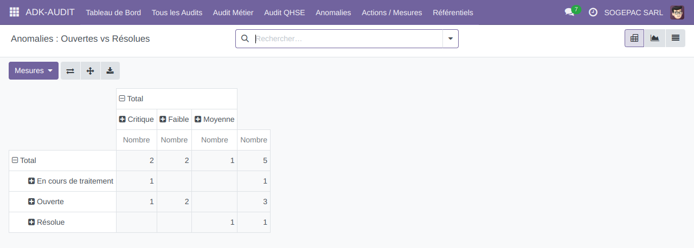
Anomalies ouvertes et résolues
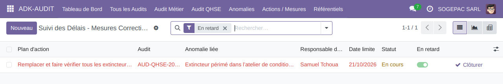
Suivi des délais des actions
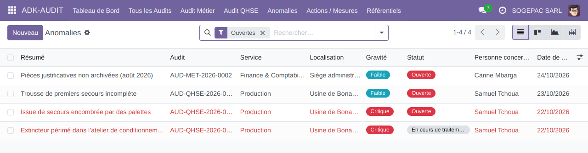
Liste de toutes les anomalies
Rôles et droits d’accès
🛡️
Administrateur Audit
Accès total : audits, référentiels, configuration et tableau de bord.
📋
Auditeur Métier
Réalise les audits métier : checklists, constats, anomalies et actions.
🦺
Agent / Responsable QHSE
Réalise et suit les audits QHSE, les anomalies et la conformité.
👁️
Audité (Responsable Service)
Consulte en lecture seule les anomalies et mesures de son service.
Pourquoi ADK-AUDIT ?
🔎
Audits internes et externes
Audit métier et audit QHSE dans la même application.
📷
Preuves photo
Chaque anomalie est documentée, photos reprises dans le rapport.
✅
Conformité automatique
Taux calculé en temps réel, points non applicables exclus.
⏰
Suivi des retards
Les actions échues sont signalées automatiquement en rouge.
📄
Rapport PDF prêt à remettre
Un clic pour un rapport professionnel de la mission.
🧾
Traçabilité
Historique et messagerie Odoo sur chaque audit, anomalie et action.
Fiche technique
Version Odoo : 18.0 (Community et Enterprise)
Licence : LGPL-3, gratuit
Dépendances : base, mail, hr, web (aucune application payante requise)
Langue : interface en français
Installation : copier le dossier adk_audit dans vos addons, mettre à jour la liste des applications, puis installer ADK-AUDIT